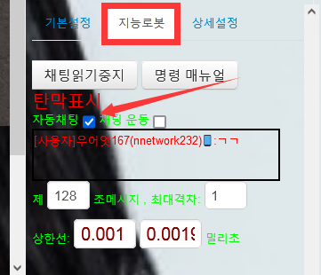

3.1.x-mv3/3.1.x-mv3-emoji/3.2.x-mv3/3.2.x-mv3-emoji 추가 명령 게임 명령： !탑=!top:랜덤으로 탑 영웅을 선정하여 발송 !정글=!jun=!jungle:랜덤으로 정글 영웅을 선정하여 발송 !미드=!mid=!middle:랜덤으로 미드 영웅을 선정하여 발송 !바텀=!ad=!adc:랜덤으로 바텀 영웅을 선정하여 발송 !서포터=!sup=!support:랜덤으로 서포터 영웅을 선정하여 발송 !임의=!모든=!any=!all:랜덤으로 임의의 영웅을 선정하여 발송 1.2-mv2/v2.2-mv2모든 명령 웹 명령： !재부팅=!reboot=!reload:현재 웹 페이지 새로 고침 다시 로드 생방송 간 명령： !보내다=!send=!发送=!보내기： 이 명령을 보내는 사람, 닉네임 + 이 명령 메시지 !극한길이=!ultimatelength=!long=!极限长度："̨̨̨̨̨̨̨̨̨̨̨̨̨̨̨̨̨̨̨̨̨̨̨̨̨̨̨̨̨̨̨̨̨̨̨̨̨̨̨̨̨̨̨̨̨̨̨̨̨̨̨̨̨̨̨̨̨̨̨̨̨̨̨̨̨̨̨̨̨̨̨̨̨̨̨̨̨̨̨̨̨̨̨̨̨̨̨̨̨̨̨̨̨̨̨̨̨̨̨̨̨̨̨̨̨̨̨̨̨̨̨̨̨̨̨̨̨̨̨̨̨̨̨̨̨̨̨̨̨̨̨̨̨̨̨̨̨̨̨̨̨̨̨̨̨̨̨̨̨̨̨̨̨̨̨̨̨̨̨̨̨̨̨̨̨̨̨̨̨̨̨̨̨̨̨̨̨̨̨̨̨̨̨̨̨̨̨̨̨̨̨̨̨̨̨̨̨̨̨̨̨̨̨̨̨̨̨̨̨̨̨̨̨̨̨̨̨̨̨̨̨̨̨̨̨̨̨̨̨̨̨̨̨̨̨̨̨̨̨̨̨̨̨̨̨̨̨̨̨̨̨̨̨̨̨̨̨̨̨̨̨̨̨̨̨̨̨̨̨̨̨̨̨̨̨̨̨̨̨̨̨̨̨̨̨̨̨̨̨̨̨̨̨̨̨̨̨̨̨̨̨̨̨̨̨̨̨̨̨̨̨̨̨̨̨̨̨̨̨̨̨̨̨̨̨̨̨̨̨̨̨̨̨̨̨̨̨̨̨̨̨̨̨̨̨̨̨̨̨̨̨̨̨̨̨̨̨̨̨̨̨̨̨̨̨̨̨̨̨̨̨̨̨̨̨̨̨̨̨̨̨̨̨̨̨̨̨̨̨̨̨̨̨̨̨̨̭̤̩͚̭̤̩͚̭̤̩͚̭̤̩͚̭̤̩͚̭̤̩͚̭̤̩͚̭̤̩͚̭̤̩͚̭̤̩͚̭̤̩͚̭̤̩͚̭̤̩͚̭̤̩͚̭̤̩͚̭̤̩͚̭̤̩͚̭̤̩͚̭̤̩͚̭̤̩͚̭̤̩͚̭̤̩͚̭̤̩͚̭̤̩͚̭̤̩͚̭̤̩͚̭̤̩͚̭̤̩͚̭̤̩͚̭̤̩͚̭̤̩͚̭̤̩͚̭̤̩͚̭̤̩͚̭̤̩͚̭̤̩͚̭̤̩͚̭̤̩͚̭̤̩͚̭̤̩͚̭̤̩͚̭̤̩͚̭̤̩͚̭̤̩͚̭̤̩͚̭̤̩͚̭̤̩͚̭̤̩͚̭̤̩͚̭̤̩͚̭̤̩͚̭̤̩͚̭̤̩͚̭̤̩͚̭̤̩͚̭̤̩͚̭̤̩͚̭̤̩͚̭̤̩͚̭̤̩͚̭̤̩͚̭̤̩͚̭̤̩͚̭̤̩͚̭̤̩͚̭̤̩͚̭̤̩͚̭̤̩͚̭̤̩͚̭̤̩͚̭̤̩͚̭̤̩͚̭̤̩͚̭̤̩͚̭̤̩͚̭̤̩͚̭̤̩͚̭̤̩͚̭̤̩͚̭̤̩͚̭̤̩͚̭̤̩͚̭̤̩͚̭̤̩͚̭̤̩͚̭̤̩͚̭̤̩͚̭̤̩͚̭̤̩͚̭̤̩͚̭̤̩͚̭̤̩͚̭̤̩͚̭̤̩͚̭̤̩͚̭̤̩͚̭̤̩͚̭̤̩͚̭̤̩͚̭̤̩͚̭̤̩͚̭̤̩͚̭̤̩͚̭̤̩͚̭̤̩͚̭̤̩͚̭̤̩͚̭̤̩͚̭̤̩͚̭̤̩͚̭̤̩͚̭̤̩͚̭̤̩͚̭̤̩͚̭̤̩͚̭̤̩͚̭̤̩͚̭̤̩͚̭̤̩͚̭̤̩͚̭̤̩͚̭̤̩͚̭̤̩͚̭̤̩͚̭̤̩͚̭̤̩͚̭̤̩͚̭̤̩͚̭̤̩͚̭̤̩͚̭̤̩͚̭̤̩͚̭̤̩͚̭̤̩͚̭̤̩͚̭̤̩͚̭̤̩͚̭̤̩͚̭̤̩͚̭̤̩͚̭̤̩͚̭̤̩͚̭̤̩͚̭̤̩͚̭̤̩͚̭̤̩͚̭̤̩͚̭̤̩͚̭̤̩͚̭̤̩͚̭̤̩͚̭̤̩͚̭̤̩͚̭̤̩͚̭̤̩͚̭̤̩͚̭̤̩͚̭̤̩͚̭̤̩͚̭̤̩͚̭̤̩͚̭̤̩͚̭̤̩͚̭̤̩͚̭̤̩͚̭̤̩͚̭̤̩͚̭̤̩͚̭̤̩͚̭̤̩͚̭̤̩͚̭̤̩͚̭̤̩͚̭̤̩͚̭̤̩͚̭̤̩͚̭̤̩͚̭̤̩͚̭̤̩͚̭̤̩͚̭̤̩͚̭̤̩͚̭̤̩͚̭̤̩͚̭̤̩͚̭̤̩͚̭̤̩͚̭̤̩͚̭̤̩͚̭̤̩͚̭̤̩͚̭̤̩͚̭̤̩͚̭̤̩͚̭̤̩͚̭̤̩͚̭̤̩͚̭̤̩͚̭̤̩͚̭̤̩͚̭̤̩͚̭̤̩͚̭̤̩͚̭̤̩͚̭̤̩͚̭̤̩͚̭̤̩͚̭̤̩͚̭̤̩͚̭̤̩͚̭̤̩͚̭̤̩͚̭̤̩͚̭̤̩͚̭̤̩͚̭̤̩͚̭̤̩͚̭̤̩͚̭̤̩͚̭̤̩͚̭̤̩͚̭̤̩͚̭̤̩͚̭̤̩͚̭̤̩͚̭̤̩͚̭̤̩͚̭̤̩͚̭̤̩͚̭̤̩͚̭̤̩͚̭̤̩͚̭̤̩͚̭̤̩͚̭̤̩͚̭̤̩͚̭̤̩͚̭̤̩͚̭̤̩͚̭̤̩͚̭̤̩͚̭̤̩͚̭̤̩͚̭̤̩͚̭̤̩͚̭̤̩͚̭̤̩͚̭̤̩͚̭̤̩͚̭̤̩͚̭̤̩͚̭̤̩͚̭̤̩͚̭̤̩͚̭̤̩͚̭̤̩͚̭̤̩͚̭̤̩͚̭̤̩͚̭̤̩͚̭̤̩͚̭̤̩͚̭̤̩͚̭̤̩͚̭̤̩͚̭̤̩͚̭̤̩͚̭̤̩͚̭̤̩͚̭̤̩͚̭̤̩͚̭̤̩͚̭̤̩͚̭̤̩͚̭̤̩͚̭̤̩͚̭̤̩͚̭̤̩͚̭̤̩͚̭̤̩͚̭̤̩͚̭̤̩͚̭̤̩͚̭̤̩͚̭̤̩͚̭̤̩͚̭̤̩͚̭̤̩͚̭̤̩͚̭̤̩͚̭̤̩͚̭̤̩͚̭̤̩͚̭̤̩͚̭̤̩͚̭̤̩͚̭̤̩͚̭̤̩͚̭̤̩͚̭̤̩͚̭̤̩͚̭̤̩͚̭̤̩͚̭̤̩͚̭̤̩͚̭̤̩͚̭̤̩͚̭̤̩͚̭̤̩͚̭̤̩͚̭̤̩͚̭̤̩͚̭̤̩͚̭̤̩͚̭̤̩͚̭̤̩͚̭̤̩͚̭̤̩͚̭̤̩͚̭̤̩͚̭̤̩͚̭̤̩͚̭̤̩͚̭̤̩͚̭̤̩͚̭̤̩͚̭̤̩͚̭̤̩͚̭̤̩͚̭̤̩͚̭̤̩͚̭̤̩͚̭̤̩͚̭̤̩͚̭̤̩͚̭̤̩͚̭̤̩͚̭̤̩͚̭̤̩͚̭̤̩͚̭̤̩͚̭̤̩͚̭̤̩͚̭̤̩͚̭̤̩͚̭̤̩͚̭̤̩͚̭̤̩͚̭̤̩͚̭̤̩͚̭̤̩͚̭̤̩͚̭̤̩͚̭̤̩͚̭̤̩͚̭̤̩͚̭̤̩͚̭̤̩͚̭̤̩͚̭̤̩͚̭̤̩͚̭̤̩͚̭̤̩͚̭̤̩͚̭̤̩͚̭̤̩͚̭̤̩͚̭̤̩͚̭̤̩͚̭̤̩͚̭̤̩͚̭̤̩͚̭̤̩͚̭̤̩͚̭̤̩͚̭̤̩͚̭̤̩͚͚̭̤̩͚̭̤̩͚̭̤̩͚̭̤̩͚̭̤̩͚̭̤̩͚̭̤̩͚͚̭̤̩͚̭̤̩͚̭̤̩͚̭̤̩͚̭̤̩͚̭̤̩͚̭̤̩͚͚̭̤̩͚̭̤̩͚̭̤̩͚̭̤̩͚̭̤̩͚௵"유니코드의 긴 선 보내기 !text:컨 텐:컨텐츠 한 번 보내기 !text:컨 텐,횟수x간격: 예를 들어 두 번 보내기 1, !text:1,2x0.1:간격이 0.1인 메시지를 두 번 보냅니다. x는 알파벳 X，격식은 엄격히 따른다 !멈추다=!stop:만약 대량 간격이 너무 길면, 이 명령을 사용하여 내용을 계속 보내는 것을 정지합니다 !채팅속도=!지연속도=!속도:현재 생방송 채팅 속도와 시청자 수 발송 !별=!즐겨찾기：모음집 지금 보고 있어요. !UP=!좋아요=!좋아：현재 방송국 좋아요 누르기. 시간 관련 명령: !보고시간= !시간= !time:현재 시간 !방송시작시간:방송 시작 시간 테스트 중인 명령: !용감해지다：짧은 줄 보내기'̀̀̀̀̀̀̀̀̀̀̀̀̀̀̀̀̀̀̀̀̀̀̀̀̀̀̀̀̀̀̀̀̀̀̀̀̀̀̀̀̀̀̀̀̀̀̀̀̀̀̀̀̀̀̀̀̀̀̀ͯ' !웅기하다：긴 줄 보내기'̀̀̀̀̀̀̀̀̀̀̀̀̀̀̀̀̀̀̀̀̀̀̀̀̀̀̀̀̀̀̀̀̀̀̀̀̀̀̀̀̀̀̀̀̀̀̀̀̀̀̀̀̀̀̀̀̀̀̀̀̀̀̀̀̀̀̀̀̀̀̀̀̀̀̀̀̀̀̀̀̀̀̀̀̀̀̀̀̀̀̀̀̀̀̀̀̀̀̀̀̀̀̀̀̀̀̀̀̀̀̀̀̀̀̀̀̀̀̀̀̀̀̀̀̀̀̀̀̀̀̀̀̀̀̀̀̀̀̀̀̀̀̀̀̀̀̀̀̀̀̀̀̀̀̀̀̀̀̀̀̀̀̀̀̀̀̀̀̀̀̀̀̀̀̀̀̀̀̀̀̀̀̀̀̀̀̀̀̀̀̀̀̀̀̀̀̀̀̀̀̀̀̀̀̀̀̀̀̀̀̀̀̀̀̀̀̀̀̀̀̀̀̀̀̀̀̀̀̀̀̀̀̀̀̀̀̀̀̀̀̀̀̀̀̀̀̀̀̀̀̀̀̀̀̀̀̀̀̀̀̀̀̀̀̀̀ͯ' !문지기=!슈퍼팬:현재 생방송 중인 슈퍼 관리자의 닉네임 + id를 집계하여 번호로 표시하여 발송합니다 계획 중인 명령: